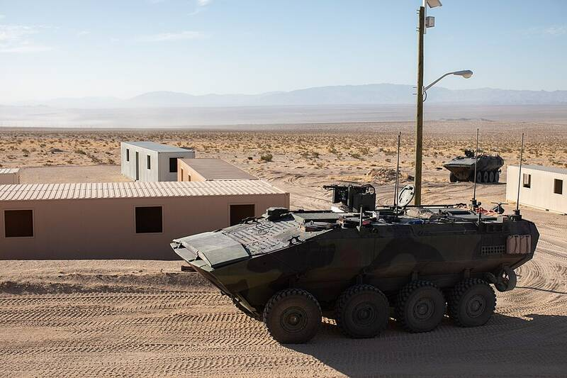

MCAGCC Twentynine Palms California California · Military base · 34.237°N, 116.056°W An amphibious assault vehicle during a training exercise at Twentynine Palms. Photo: Cpl. Jamin Powell, U.S. Marine Corps, Public domain (source) The Marine Corps' largest training range. 1 Open in the interactive Watcher Sources Marine Corps Air Ground Combat Center Twentynine Palms Wikipedia